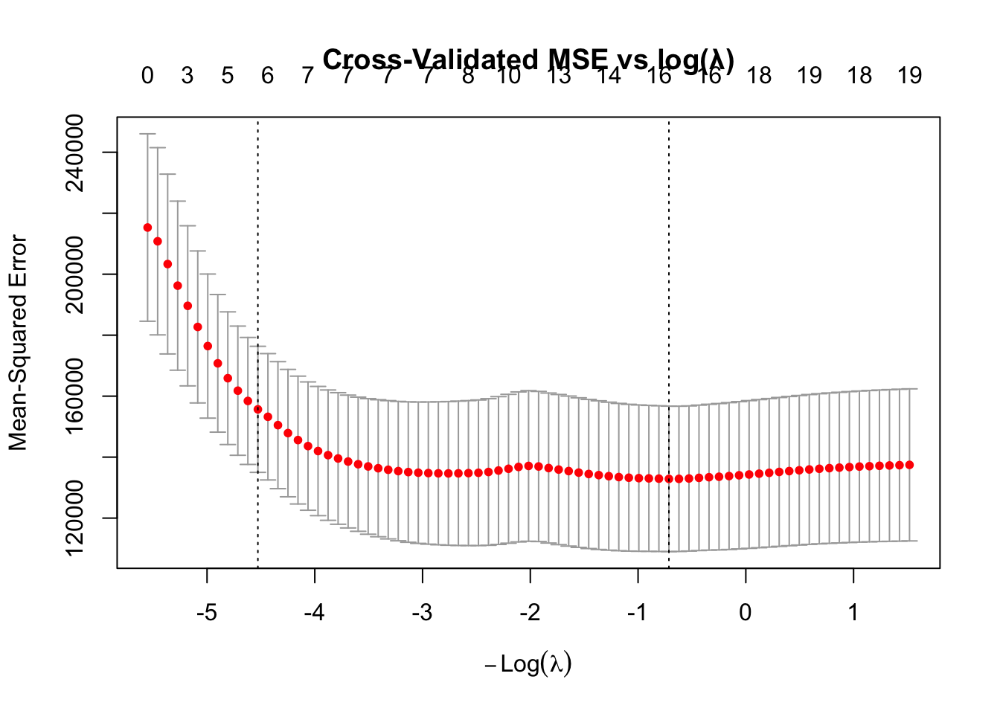

This project focuses on model selection and flexibility: using regularization (LASSO) and stepwise selection to predict baseball salaries, contrasting a rigid linear fit against a flexible k-nearest-neighbors smoother on synthetic data, and tuning kNN on real housing data.
3.1 Q1 — MLB Salary Prediction
Three approaches to predicting player salary are compared: LASSO at two penalty strengths and stepwise backward elimination.
Each bar shows the root-mean-square error (in $1,000s) of a model’s salary predictions on the held-out 15% validation set — lower is better. Three approaches are compared: the two LASSO models (penalty tuned by cross-validation at λ.min and λ.1se) and stepwise backward elimination. Backward elimination has the shortest bar, meaning its predictions were, on average, closest to players’ actual salaries on unseen data.
Code
plot(cv_lasso, main ="Cross-Validated MSE vs log(λ)")

This plot is the diagnostic LASSO uses to select its penalty strength λ. The x-axis is log(λ) and the y-axis is cross-validated prediction error; red dots show the average error at each λ with error bars. The two dashed vertical lines mark λ.min (the penalty that minimizes error) and λ.1se (the simplest model within one standard error of the best). The numbers across the top count how many predictors remain active — as λ grows, LASSO progressively shrinks more coefficients to exactly zero, producing sparser models.
Code
pva_df <-data.frame(Actual = y_valid_mlb, Predicted =as.numeric(pred_back))p2 <-ggplot(pva_df, aes(x = Actual, y = Predicted)) +geom_point(alpha =0.6, color ="#4e79a7") +geom_abline(slope =1, intercept =0, color ="red", linetype ="dashed") +labs(title ="Backward Elimination: Predicted vs Actual",x ="Actual Salary (thousands $)", y ="Predicted Salary (thousands $)") +theme_minimal(base_size =13)ggplotly(p2)
For the best-performing backward-elimination model, each point is one player from the validation set: predicted salary (y-axis) versus their actual salary (x-axis). The red dashed line marks perfect prediction — points on it were predicted exactly. The cluster near the line at lower salary levels shows good accuracy for most players, while the wider spread at high salaries reflects greater uncertainty for the highest-paid stars.
Key Findings — MLB Salary
Best Model: Backward Elimination
Model
λ / Method
RMSE ($K)
Predictors
LASSO λ.min
2.04
240.3
15
LASSO λ.1se
92.58
280.4
5
Backward Elim. (AIC)
—
235
10
Backward elimination selected: AtBat, Hits, Walks, CAtBat, CRuns, CRBI, CWalks, Division, PutOuts, Assists. AIC was preferred over BIC to retain more relevant predictors and better capture the underlying relationship without being overly restrictive.
3.2 Q2 — Linear Regression vs kNN
A deliberately non-linear synthetic dataset exposes the difference between a parametric and a non-parametric model.
pred_df <-data.frame(x = x_grid, LinReg = lm_preds, kNN = knn_preds)p3 <-ggplot(df_sim, aes(x = x, y = y)) +geom_point(alpha =0.5, color ="black", size =1.5) +geom_line(data = pred_df, aes(x = x, y = LinReg, color ="Linear Regression"), linewidth =1.2) +geom_line(data = pred_df, aes(x = x, y = kNN, color ="kNN (k=10)"), linewidth =1.2) +scale_color_manual(values =c("Linear Regression"="red", "kNN (k=10)"="blue")) +labs(title ="Scatterplot with Fitted Curves", x ="x", y ="y", color ="Model") +theme_minimal(base_size =13)ggplotly(p3)
The black dots are 250 raw data points generated with deliberately complex, non-linear structure (sinusoidal for x < 0, quadratic for x ∈ [0, 7], noisy for x ∈ [7, 9], and linear-with-jumps beyond x = 9). The red line is ordinary linear regression — forced into a single straight line, it cannot track the underlying curves. The blue line is a from-scratch kNN smoother (k = 10), which predicts each point by averaging its 10 nearest neighbors and visibly hugs the local shape of the data. The contrast makes the flexibility advantage of a non-parametric method visually clear.
This table reports the fitted simple linear regression of y on x. The intercept is the predicted y-value when x = 0. The slope is the average change in y for every one-unit increase in x. R² measures the share of variation in y explained by the straight-line fit — a low value here is expected and informative, quantifying just how poorly a single line captures this strongly nonlinear data.
Key Findings — Linear Regression vs kNN
SLR Model: y = 3.0483 + -0.519x | R² = 0.0608
Where does linear regression fail? The model performs most poorly in the strongly nonlinear regions — for negative x values and around the sharp transitions near x = 0 and x = 9.
Parametric vs non-parametric: Linear regression is parametric — it assumes a fixed straight-line form regardless of the data’s true shape. kNN is non-parametric — the shape emerges entirely from the data. The trade-off: linear regression is simpler and more interpretable; kNN is more flexible but harder to communicate.
Effect of decreasing k to 1: The kNN curve would become much more jagged, closely tracking individual points rather than the underlying trend. This increases flexibility but raises the risk of overfitting — memorizing noise instead of signal.
3.3 Q3 — NOVA Housing (kNN vs MLR)
Tuning the number of neighbors for kNN regression on log-price, then comparing the best kNN model against multiple linear regression.
knn_df <-data.frame(k = k_values, RMSE = rmse_knn3)p4 <-ggplot(knn_df, aes(x = k, y = RMSE)) +geom_line(color ="red", linewidth =1.2) +geom_point(data = knn_df[best_k, ], aes(x = k, y = RMSE),color ="darkred", size =4, shape =16) +annotate("text", x = best_k +2, y = rmse_knn3[best_k] +0.003,label =paste0("Optimal k = ", best_k), color ="darkred", size =4) +labs(title ="Validation RMSE vs k (kNN Regression)",x ="k (Number of Neighbors)", y ="RMSE (log scale)") +theme_minimal(base_size =13)ggplotly(p4)
This curve tunes the single hyperparameter kNN has: k, the number of neighbors averaged for each prediction. Validation RMSE (y-axis) is plotted for every k from 1 to 50. Very small k leads to overfitting — noisy, jumpy predictions that track the training data too closely — while very large k over-smooths and loses local patterns. The dark red dot marks the sweet spot where validation error reaches its minimum before rising again.
A head-to-head comparison of the two finished models on the held-out validation set, using the best k found during tuning. Both bars represent RMSE on log-price (lower is better). Linear regression edges out the tuned kNN, indicating it generalizes slightly better on this housing dataset — the linear structure of the log-price relationship is well-captured by the parametric model.
Code
nova_pva <-data.frame(Actual = y_valid_nova, Predicted = mlr_preds)p6 <-ggplot(nova_pva, aes(x = Actual, y = Predicted)) +geom_point(alpha =0.5, color ="#4e79a7") +geom_abline(slope =1, intercept =0, color ="red", linetype ="dashed") +labs(title ="MLR: Predicted vs Actual logPrice",x ="Actual log(Price)", y ="Predicted log(Price)") +theme_minimal(base_size =13)ggplotly(p6)
Each point is one validation property: the model’s predicted log-price (y-axis) versus the true log-price (x-axis), with the red dashed line marking perfect prediction. The tight diagonal band confirms that the linear model tracks actual home prices closely across the full price range, with only modest scatter above and below the ideal line.
Key Findings — NOVA Housing
Dataset: Northern Virginia housing listings (Remax, April 2019) · Response: log(Price) · Inputs: 9 scaled predictors
Model
RMSE (log price)
MLR (all predictors)
0.183
kNN (k = 4)
0.1925
Optimal k: 4 — where RMSE is minimized on the validation set. Recommended model: Linear Regression — it achieves lower validation RMSE (0.183) than kNN (0.192), meaning it generalizes better to new data on this housing dataset.
Source Code
# Regularization & k-Nearest Neighbors```{r}#| include: falselibrary(glmnet)library(MASS)library(FNN)library(ggplot2)library(plotly)rmse <-function(actual, pred) sqrt(mean((actual - pred)^2))# ── Q1: MLB Salary — LASSO vs backward elimination ───────────────────────────MLB <-read.csv("Files/MLB.csv")MLB <- MLB[, !(names(MLB) %in%"PlayerName")]MLB <-na.omit(MLB)X_mlb <-model.matrix(Salary ~ ., data = MLB)[, -1]y_mlb <-as.numeric(as.character(MLB$Salary))set.seed(52)train_idx_mlb <-sample(1:nrow(MLB), size =floor(0.85*nrow(MLB)))X_train_mlb <- X_mlb[train_idx_mlb, ]X_valid_mlb <- X_mlb[-train_idx_mlb, ]y_train_mlb <- y_mlb[train_idx_mlb]y_valid_mlb <- y_mlb[-train_idx_mlb]set.seed(2020)cv_lasso <-cv.glmnet(X_train_mlb, y_train_mlb, alpha =1)lambda_min <- cv_lasso$lambda.minlambda_1se <- cv_lasso$lambda.1sepred_min <-predict(cv_lasso, s ="lambda.min", newx = X_valid_mlb)pred_1se <-predict(cv_lasso, s ="lambda.1se", newx = X_valid_mlb)rmse_min <-rmse(y_valid_mlb, pred_min)rmse_1se <-rmse(y_valid_mlb, pred_1se)full_model <-lm(Salary ~ ., data = MLB[train_idx_mlb, ])back_model <-step(full_model, direction ="backward", trace =0)pred_back <-predict(back_model, newdata = MLB[-train_idx_mlb, ])rmse_back <-rmse(y_valid_mlb, pred_back)coef_min_nz <-sum(coef(cv_lasso, s ="lambda.min") !=0) -1coef_1se_nz <-sum(coef(cv_lasso, s ="lambda.1se") !=0) -1coef_back_nz <-length(coef(back_model)) -1# ── Q2: Synthetic data — Linear Regression vs kNN ────────────────────────────set.seed(16802)n <-250x <-runif(n, min =-5, max =15)y_sim <-ifelse( x <0,20*sin(x) +rnorm(n, 0, 2),ifelse( x <7,-0.5* x^2+3.5* x +5+rnorm(n, 0, 3),ifelse( x <9,rnorm(n, 10, 8),-3* (x -9) +sample(c(-8, 8), n, replace =TRUE, prob =c(0.5, 0.5)) +rnorm(n, 0, 2) ) ))df_sim <-data.frame(x = x, y = y_sim)lm_fit <-lm(y ~ x, data = df_sim)lm_slope <-round(coef(lm_fit)[2], 4)lm_intercept <-round(coef(lm_fit)[1], 4)lm_r2 <-round(summary(lm_fit)$r.squared, 4)knn_predict <-function(x_new, x, y, k) { dists <-abs(x - x_new) idx <-order(dists)[1:k]mean(y[idx])}x_grid <-seq(min(df_sim$x), max(df_sim$x), length.out =300)knn_preds <-sapply(x_grid, knn_predict, x = df_sim$x, y = df_sim$y, k =10)lm_preds <-predict(lm_fit, newdata =data.frame(x = x_grid))# ── Q3: NOVA Housing — MLR vs kNN regression ─────────────────────────────────NOVA <-read.csv("Files/NOVA.csv")NOVA$logPrice <-log(NOVA$Price)NOVA$SingleFamHome <-ifelse(NOVA$ListingType =="Single Family", 1, 0)x_vars <-c("Bedrooms", "Bathrooms", "LivingSQFT", "Age", "DistToWH","LotSize", "Floors", "Garage", "SingleFamHome")X_nova <- NOVA[, x_vars]y_nova <- NOVA$logPriceX_scaled <-scale(X_nova)set.seed(380)train_idx_nova <-sample(1:nrow(NOVA), size =floor(0.75*nrow(NOVA)))X_train_nova <- X_scaled[train_idx_nova, ]X_valid_nova <- X_scaled[-train_idx_nova, ]y_train_nova <- y_nova[train_idx_nova]y_valid_nova <- y_nova[-train_idx_nova]train_df_nova <-data.frame(y_train_nova, X_train_nova)valid_df_nova <-data.frame(X_valid_nova)mlr_model <-lm(y_train_nova ~ ., data = train_df_nova)mlr_preds <-predict(mlr_model, newdata = valid_df_nova)rmse_mlr <-rmse(y_valid_nova, mlr_preds)k_values <-1:50rmse_knn3 <-numeric(50)for (i in k_values) { pred <-knn.reg(train = X_train_nova, test = X_valid_nova, y = y_train_nova, k = i)$pred rmse_knn3[i] <-rmse(y_valid_nova, pred)}best_k <-which.min(rmse_knn3)best_pred <-knn.reg(train = X_train_nova, test = X_valid_nova, y = y_train_nova, k = best_k)$predrmse_best_knn <-rmse(y_valid_nova, best_pred)```This project focuses on **model selection and flexibility**: using regularization (LASSO) and stepwise selection to predict baseball salaries, contrasting a rigid linear fit against a flexible **k-nearest-neighbors** smoother on synthetic data, and tuning kNN on real housing data.## Q1 — MLB Salary PredictionThree approaches to predicting player salary are compared: LASSO at two penalty strengths and stepwise backward elimination.::: {.panel-tabset}### Model Comparison```{r}model_df <-data.frame(Model =c("LASSO (λ.min)", "LASSO (λ.1se)", "Backward Elimination"),RMSE =c(rmse_min, rmse_1se, rmse_back),Predictors =c(coef_min_nz, coef_1se_nz, coef_back_nz))p <-ggplot(model_df, aes(x =reorder(Model, RMSE), y = RMSE, fill = Model)) +geom_col(width =0.55, show.legend =FALSE) +geom_text(aes(label =round(RMSE, 1)), vjust =-0.4, size =4) +scale_fill_manual(values =c("#4e79a7", "#f28e2b", "#59a14f")) +labs(title ="Validation RMSE by Model", x ="Model", y ="RMSE (thousands $)") +theme_minimal(base_size =13)ggplotly(p, tooltip =c("x", "y"))```Each bar shows the root-mean-square error (in $1,000s) of a model's salary predictions on the held-out 15% validation set — **lower is better**. Three approaches are compared: the two LASSO models (penalty tuned by cross-validation at λ.min and λ.1se) and stepwise backward elimination. Backward elimination has the shortest bar, meaning its predictions were, on average, closest to players' actual salaries on unseen data.### LASSO Cross-Validation```{r}plot(cv_lasso, main ="Cross-Validated MSE vs log(λ)")```This plot is the diagnostic LASSO uses to select its penalty strength λ. The x-axis is log(λ) and the y-axis is cross-validated prediction error; red dots show the average error at each λ with error bars. The two dashed vertical lines mark **λ.min** (the penalty that minimizes error) and **λ.1se** (the simplest model within one standard error of the best). The numbers across the top count how many predictors remain active — as λ grows, LASSO progressively shrinks more coefficients to exactly zero, producing sparser models.### Predicted vs Actual```{r}pva_df <-data.frame(Actual = y_valid_mlb, Predicted =as.numeric(pred_back))p2 <-ggplot(pva_df, aes(x = Actual, y = Predicted)) +geom_point(alpha =0.6, color ="#4e79a7") +geom_abline(slope =1, intercept =0, color ="red", linetype ="dashed") +labs(title ="Backward Elimination: Predicted vs Actual",x ="Actual Salary (thousands $)", y ="Predicted Salary (thousands $)") +theme_minimal(base_size =13)ggplotly(p2)```For the best-performing backward-elimination model, each point is one player from the validation set: predicted salary (y-axis) versus their actual salary (x-axis). The red dashed line marks perfect prediction — points on it were predicted exactly. The cluster near the line at lower salary levels shows good accuracy for most players, while the wider spread at high salaries reflects greater uncertainty for the highest-paid stars.:::::: {.callout-tip}## Key Findings — MLB Salary**Best Model:** Backward Elimination| Model | λ / Method | RMSE ($K) | Predictors ||---|---|---|---|| LASSO λ.min |`r round(lambda_min, 2)`|`r round(rmse_min, 1)`|`r coef_min_nz`|| LASSO λ.1se |`r round(lambda_1se, 2)`|`r round(rmse_1se, 1)`|`r coef_1se_nz`|| Backward Elim. (AIC) | — |`r round(rmse_back, 1)`|`r coef_back_nz`|**Backward elimination** selected: AtBat, Hits, Walks, CAtBat, CRuns, CRBI, CWalks, Division, PutOuts, Assists. AIC was preferred over BIC to retain more relevant predictors and better capture the underlying relationship without being overly restrictive.:::## Q2 — Linear Regression vs kNNA deliberately non-linear synthetic dataset exposes the difference between a parametric and a non-parametric model.::: {.panel-tabset}### Scatterplot + Fitted Curves```{r}pred_df <-data.frame(x = x_grid, LinReg = lm_preds, kNN = knn_preds)p3 <-ggplot(df_sim, aes(x = x, y = y)) +geom_point(alpha =0.5, color ="black", size =1.5) +geom_line(data = pred_df, aes(x = x, y = LinReg, color ="Linear Regression"), linewidth =1.2) +geom_line(data = pred_df, aes(x = x, y = kNN, color ="kNN (k=10)"), linewidth =1.2) +scale_color_manual(values =c("Linear Regression"="red", "kNN (k=10)"="blue")) +labs(title ="Scatterplot with Fitted Curves", x ="x", y ="y", color ="Model") +theme_minimal(base_size =13)ggplotly(p3)```The black dots are 250 raw data points generated with deliberately complex, non-linear structure (sinusoidal for x < 0, quadratic for x ∈ [0, 7], noisy for x ∈ [7, 9], and linear-with-jumps beyond x = 9). The **red line** is ordinary linear regression — forced into a single straight line, it cannot track the underlying curves. The **blue line** is a from-scratch kNN smoother (k = 10), which predicts each point by averaging its 10 nearest neighbors and visibly hugs the local shape of the data. The contrast makes the flexibility advantage of a non-parametric method visually clear.### Linear Model Summary```{r}summary_df <-data.frame(Metric =c("Intercept", "Slope", "R²"),Value =c(lm_intercept, lm_slope, lm_r2))knitr::kable(summary_df, digits =4, caption ="SLR: y ~ x")```This table reports the fitted simple linear regression of y on x. The **intercept** is the predicted y-value when x = 0. The **slope** is the average change in y for every one-unit increase in x. **R²** measures the share of variation in y explained by the straight-line fit — a low value here is expected and informative, quantifying just how poorly a single line captures this strongly nonlinear data.:::::: {.callout-tip}## Key Findings — Linear Regression vs kNN**SLR Model:** y = `r lm_intercept` + `r lm_slope`x | R² = `r lm_r2`1. **Where does linear regression fail?** The model performs most poorly in the strongly nonlinear regions — for negative x values and around the sharp transitions near x = 0 and x = 9.2. **Parametric vs non-parametric:** Linear regression is *parametric* — it assumes a fixed straight-line form regardless of the data's true shape. kNN is *non-parametric* — the shape emerges entirely from the data. The trade-off: linear regression is simpler and more interpretable; kNN is more flexible but harder to communicate.3. **Effect of decreasing k to 1:** The kNN curve would become much more jagged, closely tracking individual points rather than the underlying trend. This increases flexibility but raises the risk of **overfitting** — memorizing noise instead of signal.:::## Q3 — NOVA Housing (kNN vs MLR)Tuning the number of neighbors for kNN regression on log-price, then comparing the best kNN model against multiple linear regression.::: {.panel-tabset}### RMSE vs k```{r}knn_df <-data.frame(k = k_values, RMSE = rmse_knn3)p4 <-ggplot(knn_df, aes(x = k, y = RMSE)) +geom_line(color ="red", linewidth =1.2) +geom_point(data = knn_df[best_k, ], aes(x = k, y = RMSE),color ="darkred", size =4, shape =16) +annotate("text", x = best_k +2, y = rmse_knn3[best_k] +0.003,label =paste0("Optimal k = ", best_k), color ="darkred", size =4) +labs(title ="Validation RMSE vs k (kNN Regression)",x ="k (Number of Neighbors)", y ="RMSE (log scale)") +theme_minimal(base_size =13)ggplotly(p4)```This curve tunes the single hyperparameter kNN has: **k**, the number of neighbors averaged for each prediction. Validation RMSE (y-axis) is plotted for every k from 1 to 50. Very small k leads to overfitting — noisy, jumpy predictions that track the training data too closely — while very large k over-smooths and loses local patterns. The dark red dot marks the sweet spot where validation error reaches its minimum before rising again.### Model Comparison```{r}nova_df <-data.frame(Model =c("MLR (all predictors)", paste0("kNN (k=", best_k, ")")),RMSE =c(rmse_mlr, rmse_best_knn))p5 <-ggplot(nova_df, aes(x =reorder(Model, RMSE), y = RMSE, fill = Model)) +geom_col(width =0.45, show.legend =FALSE) +geom_text(aes(label =round(RMSE, 4)), vjust =-0.4, size =4.5) +scale_fill_manual(values =c("#4e79a7", "#e15759")) +labs(title ="Validation RMSE: MLR vs kNN", x ="Model", y ="RMSE (log price)") +theme_minimal(base_size =13)ggplotly(p5, tooltip =c("x", "y"))```A head-to-head comparison of the two finished models on the held-out validation set, using the best k found during tuning. Both bars represent RMSE on log-price (**lower is better**). Linear regression edges out the tuned kNN, indicating it generalizes slightly better on this housing dataset — the linear structure of the log-price relationship is well-captured by the parametric model.### Predicted vs Actual (MLR)```{r}nova_pva <-data.frame(Actual = y_valid_nova, Predicted = mlr_preds)p6 <-ggplot(nova_pva, aes(x = Actual, y = Predicted)) +geom_point(alpha =0.5, color ="#4e79a7") +geom_abline(slope =1, intercept =0, color ="red", linetype ="dashed") +labs(title ="MLR: Predicted vs Actual logPrice",x ="Actual log(Price)", y ="Predicted log(Price)") +theme_minimal(base_size =13)ggplotly(p6)```Each point is one validation property: the model's predicted log-price (y-axis) versus the true log-price (x-axis), with the red dashed line marking perfect prediction. The tight diagonal band confirms that the linear model tracks actual home prices closely across the full price range, with only modest scatter above and below the ideal line.:::::: {.callout-tip}## Key Findings — NOVA Housing**Dataset:** Northern Virginia housing listings (Remax, April 2019) · **Response:** log(Price) · **Inputs:** 9 scaled predictors| Model | RMSE (log price) ||---|---|| MLR (all predictors) |`r round(rmse_mlr, 4)`|| kNN (k = `r best_k`) |`r round(rmse_best_knn, 4)`|**Optimal k:** `r best_k` — where RMSE is minimized on the validation set. **Recommended model:** Linear Regression — it achieves lower validation RMSE (`r round(rmse_mlr, 3)`) than kNN (`r round(rmse_best_knn, 3)`), meaning it generalizes better to new data on this housing dataset.:::